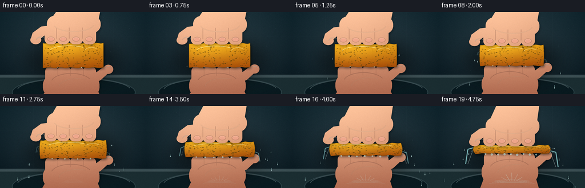
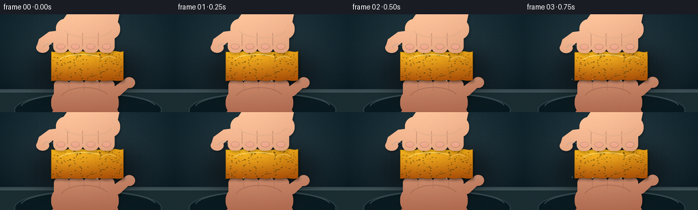

CODING AGENTS AS PIXEL WORLD MODELS
traex/GPT-5.6-Sol · mechanics_0015
点击播放 · 原生 RGB 像素
逐轮保存的候选
回放视频、检查图与代码变化。
每份候选均可单独播放。实际图片检查记录在下方工具轨迹中。
候选 01播放与检查图
点击播放 · 原生 RGB 像素


展开代码变化
--- 上一保存版本
+++ 本次保存版本
@@ -0,0 +1,358 @@
+from pathlib import Path
+import math
+import numpy as np
+from PIL import Image, ImageDraw, ImageFilter
+import artifact_io
+
+CASE_DIR = Path(__file__).resolve().parent
+W, H, N = 256, 144, 20
+SS = 4
+RW, RH = W * SS, H * SS
+rng = np.random.default_rng(1515)
+
+# Stable material detail so the sponge reads as the same object while deforming.
+pores = []
+for _ in range(145):
+ pores.append((rng.uniform(-.48, .48), rng.uniform(-.44, .44),
+ rng.uniform(.45, 1.75), rng.uniform(.25, 1.0)))
+# Fixed droplet events: (birth frame, side, vertical source, speed x, initial speed y, size)
+drops = []
+for k in range(52):
+ birth = int(rng.integers(2, 20))
+ side = -1 if rng.random() < .5 else 1
+ drops.append((birth, side, rng.uniform(-.35, .4), rng.uniform(15, 43),
+ rng.uniform(-20, 24), rng.uniform(.65, 1.7)))
+
+
+def sc(v):
+ return int(round(v * SS))
+
+
+def points(seq):
+ return [(sc(x), sc(y)) for x, y in seq]
+
+
+def layer():
+ return Image.new("RGBA", (RW, RH), (0, 0, 0, 0))
+
+
+def add(im, overlay):
+ return Image.alpha_composite(im, overlay)
+
+
+def textured_fill(mask, top, bottom, seed=0, shine=0.0):
+ """Material gradient clipped by a high-resolution mask."""
+ yy, xx = np.mgrid[0:RH, 0:RW]
+ v = yy / max(1, RH - 1)
+ # Broad soft key light from upper left and a darker lower/right rolloff.
+ key = np.exp(-(((xx / SS - 91) / 105) ** 2 + ((yy / SS - 35) / 83) ** 2))
+ shade = np.clip(.15 + .66 * (1 - v) + .22 * key, 0, 1)
+ a = np.array(mask, dtype=np.uint8)
+ rr = np.random.default_rng(seed)
+ noise = rr.normal(0, 2.0, (RH, RW))
+ arr = np.empty((RH, RW, 4), dtype=np.uint8)
+ for c in range(3):
+ val = bottom[c] + (top[c] - bottom[c]) * shade + noise
+ if shine:
+ val += shine * key
+ arr[..., c] = np.clip(val, 0, 255)
+ arr[..., 3] = a
+ return Image.fromarray(arr, "RGBA")
+
+
+def blurred_shape(draw_fn, color, blur):
+ m = Image.new("L", (RW, RH), 0)
+ d = ImageDraw.Draw(m)
+ draw_fn(d)
+ if blur:
+ m = m.filter(ImageFilter.GaussianBlur(sc(blur)))
+ z = Image.new("RGBA", (RW, RH), color)
+ z.putalpha(Image.eval(m, lambda x: x * color[3] // 255) if color[3] < 255 else m)
+ return z
+
+
+def make_background(frame):
+ yy, xx = np.mgrid[0:RH, 0:RW]
+ X, Y = xx / SS, yy / SS
+ # Cool tiled backsplash, strongly vignetted to frame the yellow sponge.
+ base = np.zeros((RH, RW, 3), dtype=np.float32)
+ base[..., 0] = 28 - 0.060 * Y
+ base[..., 1] = 48 - 0.105 * Y
+ base[..., 2] = 56 - 0.115 * Y
+ glow = 14 * np.exp(-(((X - 126) / 112) ** 2 + ((Y - 53) / 75) ** 2))
+ base += glow[..., None]
+ vign = np.clip(((X - 128) / 174) ** 2 + ((Y - 71) / 112) ** 2, 0, 1)
+ base -= 13 * vign[..., None]
+ noise = np.random.default_rng(900 + frame).normal(0, .75, (RH, RW, 1))
+ base += noise
+ im = Image.fromarray(np.uint8(np.clip(base, 0, 255)), "RGB").convert("RGBA")
+ # Defocused tile grout and wet countertop/sink.
+ bg = layer(); d = ImageDraw.Draw(bg)
+ d.line(points([(0, 43), (256, 43)]), fill=(117, 143, 147, 18), width=sc(.6))
+ d.line(points([(58, 0), (58, 109)]), fill=(113, 138, 143, 15), width=sc(.7))
+ d.line(points([(199, 0), (199, 109)]), fill=(113, 138, 143, 15), width=sc(.7))
+ d.rectangle((0, sc(110), RW, RH), fill=(30, 48, 52, 255))
+ d.rectangle((0, sc(110), RW, sc(113)), fill=(112, 135, 137, 110))
+ d.line(points([(0, 114), (256, 114)]), fill=(182, 202, 201, 70), width=sc(1))
+ # Elliptic basin and reflections.
+ d.ellipse((sc(21), sc(115), sc(237), sc(167)), fill=(13, 30, 35, 210), outline=(98, 127, 130, 100), width=sc(1))
+ d.arc((sc(30), sc(116), sc(229), sc(158)), 187, 350, fill=(174, 200, 198, 70), width=sc(1))
+ d.ellipse((sc(113), sc(132), sc(144), sc(140)), fill=(8, 18, 22, 180), outline=(90, 111, 113, 90), width=sc(1))
+ bg = bg.filter(ImageFilter.GaussianBlur(sc(.35)))
+ im = add(im, bg)
+ # faint condensation specks
+ speck = layer(); sd = ImageDraw.Draw(speck)
+ rr = np.random.default_rng(71)
+ for _ in range(25):
+ x, y = rr.uniform(8,248), rr.uniform(8,107)
+ r = rr.uniform(.15,.48)
+ sd.ellipse((sc(x-r),sc(y-r),sc(x+r),sc(y+r)), fill=(193,225,225,rr.integers(18,46)))
+ return add(im, speck)
+
+
+def hand_mask(top_hand, contact_y, pressure):
+ m = Image.new("L", (RW, RH), 0)
+ d = ImageDraw.Draw(m)
+ if top_hand:
+ # Forearm, broad palm and four individually readable fingers.
+ d.polygon(points([(105,-10),(177,-10),(171,contact_y-35),(160,contact_y-24),
+ (91,contact_y-24),(87,contact_y-39)]), fill=255)
+ d.rounded_rectangle((sc(82),sc(contact_y-48),sc(176),sc(contact_y-18)), radius=sc(14), fill=255)
+ widths = [(78,100),(99,122),(121,145),(144,168)]
+ offsets = [1.2,-.4,0,.9]
+ for (x0,x1), off in zip(widths, offsets):
+ d.rounded_rectangle((sc(x0),sc(contact_y-30+off),sc(x1),sc(contact_y+2.0)), radius=sc(9), fill=255)
+ # Thumb angles inward along the left edge of the sponge.
+ d.polygon(points([(88,contact_y-31),(72,contact_y-29),(57,contact_y-18),
+ (54,contact_y-8),(60,contact_y-3),(70,contact_y-7),
+ (82,contact_y-17),(96,contact_y-20)]), fill=255)
+ d.ellipse((sc(53),sc(contact_y-13),sc(72),sc(contact_y+2)), fill=255)
+ else:
+ # Bottom hand is palm-up. Fingers support the lower face; wrist leaves frame.
+ d.polygon(points([(91,contact_y+22),(79,contact_y+43),(70,151),
+ (177,151),(166,contact_y+30),(154,contact_y+20)]), fill=255)
+ d.rounded_rectangle((sc(75),sc(contact_y+12),sc(174),sc(contact_y+53)), radius=sc(19), fill=255)
+ widths = [(79,102),(100,124),(122,147),(145,168)]
+ offsets = [1.0,-.4,0,1.2]
+ for (x0,x1), off in zip(widths, offsets):
+ d.rounded_rectangle((sc(x0),sc(contact_y-2),sc(x1),sc(contact_y+30+off)), radius=sc(9), fill=255)
+ # Upturned thumb cups the sponge's right end.
+ d.polygon(points([(161,contact_y+29),(176,contact_y+22),(189,contact_y+10),
+ (195,contact_y+1),(190,contact_y-4),(181,contact_y-1),
+ (169,contact_y+8),(154,contact_y+12)]), fill=255)
+ d.ellipse((sc(181),sc(contact_y-5),sc(198),sc(contact_y+11)), fill=255)
+ return m
+
+
+def draw_hand(im, top_hand, contact_y, pressure, frame):
+ mask = hand_mask(top_hand, contact_y, pressure)
+ # Contact cast shadow beneath each hand.
+ sh = Image.new("RGBA", (RW,RH), (0,0,0,0))
+ sm = mask.filter(ImageFilter.GaussianBlur(sc(2.2)))
+ shifted = Image.new("L", (RW,RH), 0)
+ shifted.paste(sm, (sc(1.1), sc(2 if top_hand else 1)))
+ sh.putalpha(shifted.point(lambda a: int(a*.31)))
+ im = add(im, sh)
+ skin = textured_fill(mask, (247,190,151), (157,88,66), 1200+frame+(0 if top_hand else 100), 5)
+ im = add(im, skin)
+ detail = layer(); d = ImageDraw.Draw(detail)
+ if top_hand:
+ # Knuckle warmth and nail plates near the four pressing fingertips.
+ for j, (x0,x1) in enumerate([(78,100),(99,122),(121,145),(144,168)]):
+ cx=(x0+x1)/2
+ d.ellipse((sc(cx-6.2),sc(contact_y-11),sc(cx+6.2),sc(contact_y-3.0)),
+ fill=(238,165,142,185), outline=(145,83,68,110), width=sc(.55))
+ d.arc((sc(cx-5.6),sc(contact_y-10.4),sc(cx+5.6),sc(contact_y-3.0)),190,345,
+ fill=(255,219,194,150),width=sc(.55))
+ # Finger separation grooves.
+ for x in (99,121,144):
+ d.line(points([(x,contact_y-27),(x,contact_y-8)]), fill=(112,64,56,90), width=sc(.65))
+ d.arc((sc(94),sc(contact_y-46),sc(164),sc(contact_y-20)), 10,165, fill=(255,218,182,90), width=sc(1))
+ else:
+ # Palm creases and soft highlights distinguish the second hand.
+ d.arc((sc(89),sc(contact_y+10),sc(160),sc(contact_y+43)), 195,337,
+ fill=(105,59,54,90), width=sc(.8))
+ d.arc((sc(103),sc(contact_y+19),sc(169),sc(contact_y+48)), 180,294,
+ fill=(255,208,170,80), width=sc(.7))
+ for x in (101,123,146):
+ d.line(points([(x,contact_y+2),(x,contact_y+15)]), fill=(111,63,56,65), width=sc(.55))
+ # Wet specular glints on skin.
+ d.arc((sc(63 if top_hand else 183),sc(contact_y-11 if top_hand else contact_y-2),
+ sc(80 if top_hand else 197),sc(contact_y+2 if top_hand else contact_y+11)),
+ 195,330,fill=(226,251,247,150),width=sc(.8))
+ detail = detail.filter(ImageFilter.GaussianBlur(sc(.15)))
+ return add(im, detail)
+
+
+def sponge_polygon(cx, cy, w, h, p):
+ # Pressure produces four top indentations and pronounced side bulging.
+ pts=[]
+ for k in range(25):
+ u=-.5+k/24
+ dent=sum(math.exp(-((u-c)/.075)**2) for c in (-.34,-.12,.10,.31))
+ y=cy-h/2 + .8*math.sin(k*1.7+.4) + p*1.15*dent
+ x=cx+u*w
+ pts.append((x,y))
+ for k in range(1,14):
+ v=-.5+k/13
+ bulge=3.7*p*(1-(2*v)**2)
+ pts.append((cx+w/2+bulge,cy+v*h))
+ for k in range(24,-1,-1):
+ u=-.5+k/24
+ dent=sum(math.exp(-((u-c)/.08)**2) for c in (-.29,-.06,.17,.36))
+ y=cy+h/2 + .6*math.sin(k*1.43+1.2) - p*.75*dent
+ pts.append((cx+u*w,y))
+ for k in range(12,0,-1):
+ v=-.5+k/13
+ bulge=3.7*p*(1-(2*v)**2)
+ pts.append((cx-w/2-bulge,cy+v*h))
+ return pts
+
+
+def draw_sponge(im, cx, cy, w, h, p, frame):
+ poly=sponge_polygon(cx,cy,w,h,p)
+ mask=Image.new("L",(RW,RH),0); md=ImageDraw.Draw(mask)
+ md.polygon(points(poly),fill=255)
+ # deep wet contact shadow
+ shadow=Image.new("RGBA",(RW,RH),(0,0,0,0)); sm=mask.filter(ImageFilter.GaussianBlur(sc(2)))
+ offset=Image.new("L",(RW,RH),0); offset.paste(sm,(sc(1.5),sc(2.4)))
+ shadow.putalpha(offset.point(lambda a:int(a*.46)))
+ im=add(im,shadow)
+ yy,xx=np.mgrid[0:RH,0:RW]; X=xx/SS; Y=yy/SS
+ yn=np.clip((Y-(cy-h/2))/max(h,1),0,1)
+ key=np.exp(-(((X-(cx-24))/55)**2+((Y-(cy-h*.27))/25)**2))
+ body=np.empty((RH,RW,4),dtype=np.uint8)
+ grain=np.random.default_rng(300).normal(0,4.0,(RH,RW))
+ # saturated golden cellulose, darker as it becomes waterlogged and compressed
+ body[...,0]=np.clip(222-55*yn+28*key-10*p+grain,0,255)
+ body[...,1]=np.clip(155-76*yn+34*key-8*p+grain*.7,0,255)
+ body[...,2]=np.clip(25-13*yn+12*key+grain*.25,0,255)
+ body[...,3]=np.array(mask)
+ im=add(im,Image.fromarray(body,"RGBA"))
+ tex=layer(); d=ImageDraw.Draw(tex)
+ # Cellular pores mapped through the changing dimensions.
+ for u,v,r,dark in pores:
+ bulge=1 + .075*p*(1-(2*v)**2)
+ x=cx+u*w*bulge; y=cy+v*h
+ ry=max(.22,r*(.62-.26*p))
+ rx=r*(.8+.32*p)
+ col=(78,55,11,int(75+95*dark))
+ d.ellipse((sc(x-rx),sc(y-ry),sc(x+rx),sc(y+ry)),fill=col)
+ if r>1.1:
+ d.arc((sc(x-rx),sc(y-ry),sc(x+rx),sc(y+ry)),195,325,
+ fill=(255,224,105,100),width=sc(.35))
+ # darker perimeter and pressure wrinkles
+ d.line(points(poly+[poly[0]]),fill=(100,65,10,185),width=sc(.8),joint="curve")
+ for q in (-.34,-.12,.10,.31):
+ x=cx+q*w
+ d.line(points([(x-4,cy-h*.42+2*p),(x,cy-h*.30+1.5*p),(x+2,cy-h*.13)]),
+ fill=(110,71,11,int(45+80*p)),width=sc(.55))
+ # coherent wet glossy streaks
+ d.arc((sc(cx-w*.39),sc(cy-h*.40),sc(cx+w*.25),sc(cy+h*.05)),192,318,
+ fill=(255,246,174,170),width=sc(1.05))
+ d.arc((sc(cx+w*.17),sc(cy-h*.33),sc(cx+w*.43),sc(cy+h*.17)),210,315,
+ fill=(245,255,218,120),width=sc(.7))
+ tex=tex.filter(ImageFilter.GaussianBlur(sc(.12)))
+ return add(im,tex)
+
+
+def draw_water_behind(im, frame, cx, cy, w, h, p):
+ wat=layer(); d=ImageDraw.Draw(wat)
+ # Falling/ejected drops. More events are activated as pressure ramps up.
+ activation=2+int(50*(p**.72))
+ for idx,event in enumerate(drops):
+ birth,side,sv,vx,vy,size=event
+ if idx>=activation or frame<birth: continue
+ age=(frame-birth)/4.0
+ sx=cx+side*(w*.49+2.5*p); sy=cy+sv*h
+ x=sx+side*vx*age; y=sy+vy*age+42*age*age
+ if x<-4 or x>260 or y>148: continue
+ speed_y=vy+84*age
+ length=min(5.5,1.1+abs(speed_y)*.035)
+ d.line(points([(x,y-length),(x,y+length*.35)]),fill=(176,230,231,155),width=max(sc(.55),sc(size*.55)))
+ d.ellipse((sc(x-size*.55),sc(y-size*.55),sc(x+size*.55),sc(y+size*.65)),
+ fill=(203,246,243,180),outline=(240,255,250,190),width=sc(.25))
+ # Pressure-induced sheets and rivulets, strongly visible late in the timelapse.
+ if p>.14:
+ q=(p-.14)/.86
+ for side,off in [(-1,-.20),(1,.14)]:
+ x=cx+side*(w*.5+2*p); y=cy+off*h
+ ln=5+24*q
+ d.line(points([(x,y),(x+side*(3+8*q),y+3),(x+side*(4+11*q),y+ln)]),
+ fill=(154,224,226,int(80+115*q)),width=sc(.8+1.1*q))
+ d.line(points([(x+side*.4,y),(x+side*(3+8*q),y+ln)]),
+ fill=(235,255,250,int(105+100*q)),width=sc(.35+.4*q))
+ wat=wat.filter(ImageFilter.GaussianBlur(sc(.18)))
+ return add(im,wat)
+
+
+def draw_foreground_water(im, frame, cx, cy, w, h, p):
+ fg=layer(); d=ImageDraw.Draw(fg)
+ # Beads clinging to the lower sponge edge.
+ count=2+int(7*p)
+ for j in range(count):
+ u=-.39+(j+.35)*.78/max(count,1)
+ x=cx+u*w; y=cy+h*.48 + (j%3)*.45
+ r=.6+1.2*p*((j%2)*.35+.65)
+ d.ellipse((sc(x-r),sc(y-.25*r),sc(x+r),sc(y+1.7*r)),
+ fill=(177,229,224,140),outline=(242,255,247,205),width=sc(.3))
+ # Basin impact splashes/ripples build as squeezing intensifies.
+ if p>.22:
+ q=(p-.22)/.78
+ for j in range(3):
+ rx=10+20*q+j*5; yy=132+j*2.2
+ d.arc((sc(128-rx),sc(yy-2.5),sc(128+rx),sc(yy+2.5)),188,352,
+ fill=(180,224,222,int(90*q)),width=sc(.5))
+ if q>.35:
+ for j in range(5):
+ ang=(-1.05+j*.52); L=(4+10*q)*(1-.08*abs(j-2))
+ x=128+(j-2)*4
+ d.line(points([(x,131),(x+math.sin(ang)*L,131-math.cos(ang)*L)]),
+ fill=(205,245,240,int(120*q)),width=sc(.5))
+ return add(im,fg.filter(ImageFilter.GaussianBlur(sc(.10))))
+
+
+def render(frame):
+ t=frame/(N-1)
+ # Convex curve gives visibly accelerating, timelapse-like pressure.
+ p=t**1.72
+ cx=128+.35*math.sin(frame*.55)
+ cy=76
+ h=43-28*p
+ w=106+22*p
+ top=cy-h/2
+ bottom=cy+h/2
+ im=make_background(frame)
+ # Diffuse shadow of the entire action on the backsplash.
+ shade=layer(); sd=ImageDraw.Draw(shade)
+ sd.ellipse((sc(47),sc(43),sc(210),sc(127)),fill=(0,0,0,90))
+ im=add(im,shade.filter(ImageFilter.GaussianBlur(sc(13))))
+ # Bottom hand behind the sponge, already in supporting contact.
+ im=draw_hand(im,False,bottom,p,frame)
+ im=draw_water_behind(im,frame,cx,cy,w,h,p)
+ im=draw_sponge(im,cx,cy,w,h,p,frame)
+ # Top hand overlaps the top edge, visibly applying pressure.
+ im=draw_hand(im,True,top,p,frame)
+ im=draw_foreground_water(im,frame,cx,cy,w,h,p)
+ # Local sparkle at the highest pressure point.
+ if p>.55:
+ gl=layer(); gd=ImageDraw.Draw(gl)
+ a=int(110*(p-.55)/.45)
+ gd.line(points([(cx+w*.51,cy-1),(cx+w*.51+3.5,cy-3.5)]),fill=(244,255,249,a),width=sc(.45))
+ gd.line(points([(cx+w*.51+1.75,cy-4.7),(cx+w*.51+1.75,cy+1)]),fill=(244,255,249,a),width=sc(.35))
+ im=add(im,gl)
+ # Downsample produces natural antialiasing; subtle final contrast/film grain.
+ rgb=im.convert("RGB").resize((W,H),Image.Resampling.LANCZOS)
+ arr=np.asarray(rgb).astype(np.int16)
+ grain=np.random.default_rng(5000+frame).normal(0,.55,arr.shape[:2])[:,:,None]
+ arr=np.clip((arr-128)*1.035+128+grain,0,255).astype(np.uint8)
+ return arr
+
+
+def main():
+ frames=np.stack([render(i) for i in range(N)],axis=0)
+ artifact_io.save(frames,CASE_DIR)
+ print(f"saved {frames.shape} RGB frames to {CASE_DIR}")
+
+if __name__ == "__main__":
+ main()
可观测工具轨迹
实际执行的命令与返回图片。
命令 1exit 0
/bin/bash -lc "cat prompt.txt && printf '\\n--- GENERATION_RULES.md ---\\n' && cat GENERATION_RULES.md && printf '\\n--- task_spec.json ---\\n' && cat task_spec.json"
命令 2exit 0
/bin/bash -lc "printf '%s\\n' '--- files ---'; find . -maxdepth 3 -type f -printf '%p\\n' | sort; printf '%s\\n' '--- binaries ---'; command -v ffmpeg || true; command -v python3 || true; command -v blender || true; command -v convert || true"
命令 3exit 0
/bin/bash -lc "sed -n '1,260p' artifact_io.py"
命令 4exit 0
/bin/bash -lc "cat > generate.py <<'PY'
from pathlib import Path
import math
import numpy as np
from PIL import Image, ImageDraw, ImageFilter
import artifact_io
CASE_DIR = Path(__file__).resolve().parent
W, H, N = 256, 144, 20
SS = 4
RW, RH = W * SS, H * SS
rng = np.random.default_rng(1515)
# Stable material detail so the sponge reads as the same object while deforming.
pores = []
for _ in range(145):
pores.append((rng.uniform(-.48, .48), rng.uniform(-.44, .44),
rng.uniform(.45, 1.75), rng.uniform(.25, 1.0)))
# Fixed droplet events: (birth frame, side, vertical source, speed x, initial speed y, size)
drops = []
for k in range(52):
birth = int(rng.integers(2, 20))
side = -1 if rng.random() < .5 else 1
drops.append((birth, side, rng.uniform(-.35, .4), rng.uniform(15, 43),
rng.uniform(-20, 24), rng.uniform(.65, 1.7)))
def sc(v):
return int(round(v * SS))
def points(seq):
return [(sc(x), sc(y)) for x, y in seq]
def layer():
return Image.new(\"RGBA\", (RW, RH), (0, 0, 0, 0))
def add(im, overlay):
return Image.alpha_composite(im, overlay)
def textured_fill(mask, top, bottom, seed=0, shine=0.0):
\"\"\"Material gradient clipped by a high-resolution mask.\"\"\"
yy, xx = np.mgrid[0:RH, 0:RW]
v = yy / max(1, RH - 1)
# Broad soft key light from upper left and a darker lower/right rolloff.
key = np.exp(-(((xx / SS - 91) / 105) ** 2 + ((yy / SS - 35) / 83) ** 2))
shade = np.clip(.15 + .66 * (1 - v) + .22 * key, 0, 1)
a = np.array(mask, dtype=np.uint8)
rr = np.random.default_rng(seed)
noise = rr.normal(0, 2.0, (RH, RW))
arr = np.empty((RH, RW, 4), dtype=np.uint8)
for c in range(3):
val = bottom[c] + (top[c] - bottom[c]) * shade + noise
if shine:
val += shine * key
arr[..., c] = np.clip(val, 0, 255)
arr[..., 3] = a
return Image.fromarray(arr, \"RGBA\")
def blurred_shape(draw_fn, color, blur):
m = Image.new(\"L\", (RW, RH), 0)
d = ImageDraw.Draw(m)
draw_fn(d)
if blur:
m = m.filter(ImageFilter.GaussianBlur(sc(blur)))
z = Image.new(\"RGBA\", (RW, RH), color)
z.putalpha(Image.eval(m, lambda x: x * color[3] // 255) if color[3] < 255 else m)
return z
def make_background(frame):
yy, xx = np.mgrid[0:RH, 0:RW]
X, Y = xx / SS, yy / SS
# Cool tiled backsplash, strongly vignetted to frame the yellow sponge.
base = np.zeros((RH, RW, 3), dtype=np.float32)
base[..., 0] = 28 - 0.060 * Y
base[..., 1] = 48 - 0.105 * Y
base[..., 2] = 56 - 0.115 * Y
glow = 14 * np.exp(-(((X - 126) / 112) ** 2 + ((Y - 53) / 75) ** 2))
base += glow[..., None]
vign = np.clip(((X - 128) / 174) ** 2 + ((Y - 71) / 112) ** 2, 0, 1)
base -= 13 * vign[..., None]
noise = np.random.default_rng(900 + frame).normal(0, .75, (RH, RW, 1))
base += noise
im = Image.fromarray(np.uint8(np.clip(base, 0, 255)), \"RGB\").convert(\"RGBA\")
# Defocused tile grout and wet countertop/sink.
bg = layer(); d = ImageDraw.Draw(bg)
d.line(points([(0, 43), (256, 43)]), fill=(117, 143, 147, 18), width=sc(.6))
d.line(points([(58, 0), (58, 109)]), fill=(113, 138, 143, 15), width=sc(.7))
d.line(points([(199, 0), (199, 109)]), fill=(113, 138, 143, 15), width=sc(.7))
d.rectangle((0, sc(110), RW, RH), fill=(30, 48, 52, 255))
d.rectangle((0, sc(110), RW, sc(113)), fill=(112, 135, 137, 110))
d.line(points([(0, 114), (256, 114)]), fill=(182, 202, 201, 70), width=sc(1))
# Elliptic basin and reflections.
d.ellipse((sc(21), sc(115), sc(237), sc(167)), fill=(13, 30, 35, 210), outline=(98, 127, 130, 100), width=sc(1))
d.arc((sc(30), sc(116), sc(229), sc(158)), 187, 350, fill=(174, 200, 198, 70), width=sc(1))
d.ellipse((sc(113), sc(132), sc(144), sc(140)), fill=(8, 18, 22, 180), outline=(90, 111, 113, 90), width=sc(1))
bg = bg.filter(ImageFilter.GaussianBlur(sc(.35)))
im = add(im, bg)
# faint condensation specks
speck = layer(); sd = ImageDraw.Draw(speck)
rr = np.random.default_rng(71)
for _ in range(25):
x, y = rr.uniform(8,248), rr.uniform(8,107)
r = rr.uniform(.15,.48)
sd.ellipse((sc(x-r),sc(y-r),sc(x+r),sc(y+r)), fill=(193,225,225,rr.integers(18,46)))
return add(im, speck)
def hand_mask(top_hand, contact_y, pressure):
m = Image.new(\"L\", (RW, RH), 0)
d = ImageDraw.Draw(m)
if top_hand:
# Forearm, broad palm and four individually readable fingers.
d.polygon(points([(105,-10),(177,-10),(171,contact_y-35),(160,contact_y-24),
(91,contact_y-24),(87,contact_y-39)]), fill=255)
d.rounded_rectangle((sc(82),sc(contact_y-48),sc(176),sc(contact_y-18)), radius=sc(14), fill=255)
widths = [(78,100),(99,122),(121,145),(144,168)]
offsets = [1.2,-.4,0,.9]
for (x0,x1), off in zip(widths, offsets):
d.rounded_rectangle((sc(x0),sc(contact_y-30+off),sc(x1),sc(contact_y+2.0)), radius=sc(9), fill=255)
# Thumb angles inward along the left edge of the sponge.
d.polygon(points([(88,contact_y-31),(72,contact_y-29),(57,contact_y-18),
(54,contact_y-8),(60,contact_y-3),(70,contact_y-7),
(82,contact_y-17),(96,contact_y-20)]), fill=255)
d.ellipse((sc(53),sc(contact_y-13),sc(72),sc(contact_y+2)), fill=255)
else:
# Bottom hand is palm-up. Fingers support the lower face; wrist leaves frame.
d.polygon(points([(91,contact_y+22),(79,contact_y+43),(70,151),
(177,151),(166,contact_y+30),(154,contact_y+20)]), fill=255)
d.rounded_rectangle((sc(75),sc(contact_y+12),sc(174),sc(contact_y+53)), radius=sc(19), fill=255)
widths = [(79,102),(100,124),(122,147),(145,168)]
offsets = [1.0,-.4,0,1.2]
for (x0,x1), off in zip(widths, offsets):
d.rounded_rectangle((sc(x0),sc(contact_y-2),sc(x1),sc(contact_y+30+off)), radius=sc(9), fill=255)
# Upturned thumb cups the sponge's right end.
d.polygon(points([(161,contact_y+29),(176,contact_y+22),(189,contact_y+10),
(195,contact_y+1),(190,contact_y-4),(181,contact_y-1),
(169,contact_y+8),(154,contact_y+12)]), fill=255)
d.ellipse((sc(181),sc(contact_y-5),sc(198),sc(contact_y+11)), fill=255)
return m
def draw_hand(im, top_hand, contact_y, pressure, frame):
mask = hand_mask(top_hand, contact_y, pressure)
# Contact cast shadow beneath each hand.
sh = Image.new(\"RGBA\", (RW,RH), (0,0,0,0))
sm = mask.filter(ImageFilter.GaussianBlur(sc(2.2)))
shifted = Image.new(\"L\", (RW,RH), 0)
shifted.paste(sm, (sc(1.1), sc(2 if top_hand else 1)))
sh.putalpha(shifted.point(lambda a: int(a*.31)))
im = add(im, sh)
skin = textured_fill(mask, (247,190,151), (157,88,66), 1200+frame+(0 if top_hand else 100), 5)
im = add(im, skin)
detail = layer(); d = ImageDraw.Draw(detail)
if top_hand:
# Knuckle warmth and nail plates near the four pressing fingertips.
for j, (x0,x1) in enumerate([(78,100),(99,122),(121,145),(144,168)]):
cx=(x0+x1)/2
d.ellipse((sc(cx-6.2),sc(contact_y-11),sc(cx+6.2),sc(contact_y-3.0)),
fill=(238,165,142,185), outline=(145,83,68,110), width=sc(.55))
d.arc((sc(cx-5.6),sc(contact_y-10.4),sc(cx+5.6),sc(contact_y-3.0)),190,345,
fill=(255,219,194,150),width=sc(.55))
# Finger separation grooves.
for x in (99,121,144):
d.line(points([(x,contact_y-27),(x,contact_y-8)]), fill=(112,64,56,90), width=sc(.65))
d.arc((sc(94),sc(contact_y-46),sc(164),sc(contact_y-20)), 10,165, fill=(255,218,182,90), width=sc(1))
else:
# Palm creases and soft highlights distinguish the second hand.
d.arc((sc(89),sc(contact_y+10),sc(160),sc(contact_y+43)), 195,337,
fill=(105,59,54,90), width=sc(.8))
d.arc((sc(103),sc(contact_y+19),sc(169),sc(contact_y+48)), 180,294,
fill=(255,208,170,80), width=sc(.7))
for x in (101,123,146):
d.line(points([(x,contact_y+2),(x,contact_y+15)]), fill=(111,63,56,65), width=sc(.55))
# Wet specular glints on skin.
d.arc((sc(63 if top_hand else 183),sc(contact_y-11 if top_hand else contact_y-2),
sc(80 if top_hand else 197),sc(contact_y+2 if top_hand else contact_y+11)),
195,330,fill=(226,251,247,150),width=sc(.8))
detail = detail.filter(ImageFilter.GaussianBlur(sc(.15)))
return add(im, detail)
def sponge_polygon(cx, cy, w, h, p):
# Pressure produces four top indentations and pronounced side bulging.
pts=[]
for k in range(25):
u=-.5+k/24
dent=sum(math.exp(-((u-c)/.075)**2) for c in (-.34,-.12,.10,.31))
y=cy-h/2 + .8*math.sin(k*1.7+.4) + p*1.15*dent
x=cx+u*w
pts.append((x,y))
for k in range(1,14):
v=-.5+k/13
bulge=3.7*p*(1-(2*v)**2)
pts.append((cx+w/2+bulge,cy+v*h))
for k in range(24,-1,-1):
u=-.5+k/24
dent=sum(math.exp(-((u-c)/.08)**2) for c in (-.29,-.06,.17,.36))
y=cy+h/2 + .6*math.sin(k*1.43+1.2) - p*.75*dent
pts.append((cx+u*w,y))
for k in range(12,0,-1):
v=-.5+k/13
bulge=3.7*p*(1-(2*v)**2)
pts.append((cx-w/2-bulge,cy+v*h))
return pts
def draw_sponge(im, cx, cy, w, h, p, frame):
poly=sponge_polygon(cx,cy,w,h,p)
mask=Image.new(\"L\",(RW,RH),0); md=ImageDraw.Draw(mask)
md.polygon(points(poly),fill=255)
# deep wet contact shadow
shadow=Image.new(\"RGBA\",(RW,RH),(0,0,0,0)); sm=mask.filter(ImageFilter.GaussianBlur(sc(2)))
offset=Image.new(\"L\",(RW,RH),0); offset.paste(sm,(sc(1.5),sc(2.4)))
shadow.putalpha(offset.point(lambda a:int(a*.46)))
im=add(im,shadow)
yy,xx=np.mgrid[0:RH,0:RW]; X=xx/SS; Y=yy/SS
yn=np.clip((Y-(cy-h/2))/max(h,1),0,1)
key=np.exp(-(((X-(cx-24))/55)**2+((Y-(cy-h*.27))/25)**2))
body=np.empty((RH,RW,4),dtype=np.uint8)
grain=np.random.default_rng(300).normal(0,4.0,(RH,RW))
# saturated golden cellulose, darker as it becomes waterlogged and compressed
body[...,0]=np.clip(222-55*yn+28*key-10*p+grain,0,255)
body[...,1]=np.clip(155-76*yn+34*key-8*p+grain*.7,0,255)
body[...,2]=np.clip(25-13*yn+12*key+grain*.25,0,255)
body[...,3]=np.array(mask)
im=add(im,Image.fromarray(body,\"RGBA\"))
tex=layer(); d=ImageDraw.Draw(tex)
# Cellular pores mapped through the changing dimensions.
for u,v,r,dark in pores:
bulge=1 + .075*p*(1-(2*v)**2)
x=cx+u*w*bulge; y=cy+v*h
ry=max(.22,r*(.62-.26*p))
rx=r*(.8+.32*p)
col=(78,55,11,int(75+95*dark))
d.ellipse((sc(x-rx),sc(y-ry),sc(x+rx),sc(y+ry)),fill=col)
if r>1.1:
d.arc((sc(x-rx),sc(y-ry),sc(x+rx),sc(y+ry)),195,325,
fill=(255,224,105,100),width=sc(.35))
# darker perimeter and pressure wrinkles
d.line(points(poly+[poly[0]]),fill=(100,65,10,185),width=sc(.8),joint=\"curve\")
for q in (-.34,-.12,.10,.31):
x=cx+q*w
d.line(points([(x-4,cy-h*.42+2*p),(x,cy-h*.30+1.5*p),(x+2,cy-h*.13)]),
fill=(110,71,11,int(45+80*p)),width=sc(.55))
# coherent wet glossy streaks
d.arc((sc(cx-w*.39),sc(cy-h*.40),sc(cx+w*.25),sc(cy+h*.05)),192,318,
fill=(255,246,174,170),width=sc(1.05))
d.arc((sc(cx+w*.17),sc(cy-h*.33),sc(cx+w*.43),sc(cy+h*.17)),210,315,
fill=(245,255,218,120),width=sc(.7))
tex=tex.filter(ImageFilter.GaussianBlur(sc(.12)))
return add(im,tex)
def draw_water_behind(im, frame, cx, cy, w, h, p):
wat=layer(); d=ImageDraw.Draw(wat)
# Falling/ejected drops. More events are activated as pressure ramps up.
activation=2+int(50*(p**.72))
for idx,event in enumerate(drops):
birth,side,sv,vx,vy,size=event
if idx>=activation or frame<birth: continue
age=(frame-birth)/4.0
sx=cx+side*(w*.49+2.5*p); sy=cy+sv*h
x=sx+side*vx*age; y=sy+vy*age+42*age*age
if x<-4 or x>260 or y>148: continue
speed_y=vy+84*age
length=min(5.5,1.1+abs(speed_y)*.035)
d.line(points([(x,y-length),(x,y+length*.35)]),fill=(176,230,231,155),width=max(sc(.55),sc(size*.55)))
d.ellipse((sc(x-size*.55),sc(y-size*.55),sc(x+size*.55),sc(y+size*.65)),
fill=(203,246,243,180),outline=(240,255,250,190),width=sc(.25))
# Pressure-induced sheets and rivulets, strongly visible late in the timelapse.
if p>.14:
q=(p-.14)/.86
for side,off in [(-1,-.20),(1,.14)]:
x=cx+side*(w*.5+2*p); y=cy+off*h
ln=5+24*q
d.line(points([(x,y),(x+side*(3+8*q),y+3),(x+side*(4+11*q),y+ln)]),
fill=(154,224,226,int(80+115*q)),width=sc(.8+1.1*q))
d.line(points([(x+side*.4,y),(x+side*(3+8*q),y+ln)]),
fill=(235,255,250,int(105+100*q)),width=sc(.35+.4*q))
wat=wat.filter(ImageFilter.GaussianBlur(sc(.18)))
return add(im,wat)
def draw_foreground_water(im, frame, cx, cy, w, h, p):
fg=layer(); d=ImageDraw.Draw(fg)
# Beads clinging to the lower sponge edge.
count=2+int(7*p)
for j in range(count):
u=-.39+(j+.35)*.78/max(count,1)
x=cx+u*w; y=cy+h*.48 + (j%3)*.45
r=.6+1.2*p*((j%2)*.35+.65)
d.ellipse((sc(x-r),sc(y-.25*r),sc(x+r),sc(y+1.7*r)),
fill=(177,229,224,140),outline=(242,255,247,205),width=sc(.3))
# Basin impact splashes/ripples build as squeezing intensifies.
if p>.22:
q=(p-.22)/.78
for j in range(3):
rx=10+20*q+j*5; yy=132+j*2.2
d.arc((sc(128-rx),sc(yy-2.5),sc(128+rx),sc(yy+2.5)),188,352,
fill=(180,224,222,int(90*q)),width=sc(.5))
if q>.35:
for j in range(5):
ang=(-1.05+j*.52); L=(4+10*q)*(1-.08*abs(j-2))
x=128+(j-2)*4
d.line(points([(x,131),(x+math.sin(ang)*L,131-math.cos(ang)*L)]),
fill=(205,245,240,int(120*q)),width=sc(.5))
return add(im,fg.filter(ImageFilter.GaussianBlur(sc(.10))))
def render(frame):
t=frame/(N-1)
# Convex curve gives visibly accelerating, timelapse-like pressure.
p=t**1.72
cx=128+.35*math.sin(frame*.55)
cy=76
h=43-28*p
w=106+22*p
top=cy-h/2
bottom=cy+h/2
im=make_background(frame)
# Diffuse shadow of the entire action on the backsplash.
shade=layer(); sd=ImageDraw.Draw(shade)
sd.ellipse((sc(47),sc(43),sc(210),sc(127)),fill=(0,0,0,90))
im=add(im,shade.filter(ImageFilter.GaussianBlur(sc(13))))
# Bottom hand behind the sponge, already in supporting contact.
im=draw_hand(im,False,bottom,p,frame)
im=draw_water_behind(im,frame,cx,cy,w,h,p)
im=draw_sponge(im,cx,cy,w,h,p,frame)
# Top hand overlaps the top edge, visibly applying pressure.
im=draw_hand(im,True,top,p,frame)
im=draw_foreground_water(im,frame,cx,cy,w,h,p)
# Local sparkle at the highest pressure point.
if p>.55:
gl=layer(); gd=ImageDraw.Draw(gl)
a=int(110*(p-.55)/.45)
gd.line(points([(cx+w*.51,cy-1),(cx+w*.51+3.5,cy-3.5)]),fill=(244,255,249,a),width=sc(.45))
gd.line(points([(cx+w*.51+1.75,cy-4.7),(cx+w*.51+1.75,cy+1)]),fill=(244,255,249,a),width=sc(.35))
im=add(im,gl)
# Downsample produces natural antialiasing; subtle final contrast/film grain.
rgb=im.convert(\"RGB\").resize((W,H),Image.Resampling.LANCZOS)
arr=np.asarray(rgb).astype(np.int16)
grain=np.random.default_rng(5000+frame).normal(0,.55,arr.shape[:2])[:,:,None]
arr=np.clip((arr-128)*1.035+128+grain,0,255).astype(np.uint8)
return arr
def main():
frames=np.stack([render(i) for i in range(N)],axis=0)
artifact_io.save(frames,CASE_DIR)
print(f\"saved {frames.shape} RGB frames to {CASE_DIR}\")
if __name__ == \"__main__\":
main()
PY
python3 generate.py
ls -lh pixels.npz inspection.png transition_check.png index.html frames/00.png frames/19.png"命令 5exit 0
/bin/bash -lc "python3 - <<'PY'
import numpy as np
from PIL import Image
from pathlib import Path
z=np.load('pixels.npz')['pixels']
assert z.shape==(144,256,20)
frames=np.stack([np.asarray(Image.open(f'frames/{i:02d}.png').convert('RGB')) for i in range(20)])
assert frames.shape==(20,144,256,3) and frames.dtype==np.uint8
print('shape/dtype:',frames.shape,frames.dtype)
print('range:',frames.min(),frames.max())
print('mean abs consecutive deltas:', [round(float(np.abs(frames[i].astype(int)-frames[i-1]).mean()),2) for i in range(1,20)])
print('first-last MAD:',round(float(np.abs(frames[-1].astype(int)-frames[0].astype(int)).mean()),2))
print('unique frame hashes:',len({__import__('hashlib').sha256(x.tobytes()).hexdigest() for x in frames}))
# Yellow-object vertical extent around center for selected frames
for i in [0,3,6,9,12,15,19]:
a=frames[i]; yellow=(a[:,:,0]>115)&(a[:,:,0]>a[:,:,1]*1.15)&(a[:,:,1]>55)&(np.indices(a.shape[:2])[1]>50)&(np.indices(a.shape[:2])[1]<207)
ys,xs=np.where(yellow)
print(i,'yellow extent', (int(xs.min()),int(ys.min()),int(xs.max()),int(ys.max())), 'pixels',len(xs))
PY"命令 6exit 0
/bin/bash -lc "python3 -m py_compile generate.py artifact_io.py && find frames -maxdepth 1 -name '*.png' | wc -l && git status --short 2>/dev/null || true"
保存候选 1 份；完成命令 6 次；可验证图片返回 0 张。原始 API 响应与完整日志保留在本地。